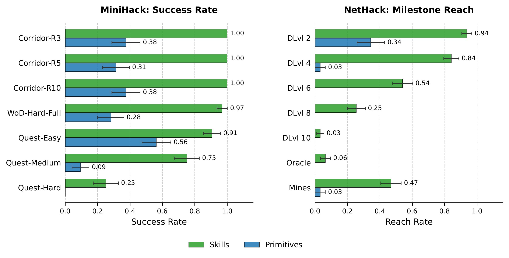
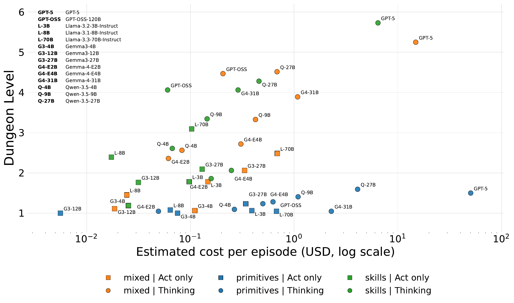
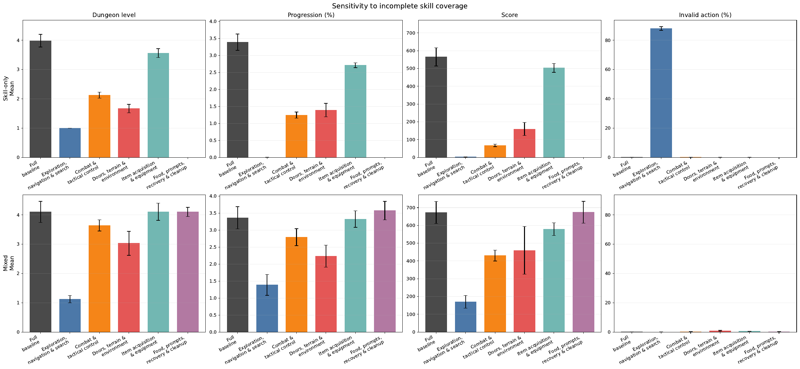
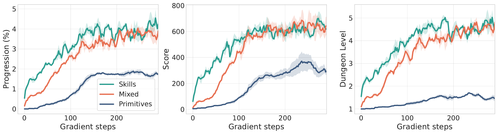

01
GPT-5 mixed-control trajectory in NetHack
8 decisions / sec
Code-based skills for long-horizon language agents
We study the benefits and tradeoffs of using low-level primitives, higher-level code skills, or both for long-horizon language agents.
Rollouts
GPT-5 explores, collects the required tools, crosses lava, defeats the monster, and reaches the stairs.
Two examples show primitive actions acting as an escape hatch: first after a skill fails, and then when the required behavior is missing from the skill library.
The ranged-combat skill returns without acting. GPT-5 uses primitive inputs to throw a javelin, kills the gas spore, then returns to a pickup skill.
The vault guard demands the gold, but no drop-gold skill exists. GPT-5 uses primitive inputs to drop all gold, then returns to exploration.
Abstract
Language agents struggle to act and learn in environments that require long sequences of low-level actions. Code-based abstractions can make these agents more productive by letting them invoke reusable skills instead of repeatedly selecting individual actions. The code handles recurring local decisions, while the language model decides which skills to use and how to combine them. Yet abstractions are leaky, and situations beyond a skill's capabilities may require a return to primitive actions.
Motivated by this tradeoff between productivity and flexibility, we systematically study how code-based action abstraction affects the performance, inference cost, and learning of language agents. We study this in NetHack, a challenging, long-horizon game environment, using CodeHack, our library of code-based skills with natural-language descriptions. We use this library to compare agents restricted to primitives with those using semantic skills alone or in combination with primitives.
We evaluate these agents in three settings: zero-shot prompting, supervised fine-tuning, and reinforcement learning. Across a broad zero-shot evaluation on NetHack, we find that compared with primitives, skills nearly triple game progression, while reducing inference cost per episode by 86%. Combining skills with primitives retains much of this benefit while preserving a path back down to low-level actions.
Finally, in RL, we find that skill-based agents learn significantly faster than agents acting on primitives, achieving a 7.2× larger average gain in dungeon level over the same training budget. These results show that a supplied skill library can improve performance, efficiency, and learning, while retaining primitives provides flexibility when the library is insufficient. We release CodeHack together with training and evaluation code.
Motivation
Language agents increasingly tackle long-horizon problems in software engineering, computer use, and embodied control. Many of these environments require long sequences of low-level actions, such as mouse clicks, keystrokes, or shell commands. Fine-grained control is expressive, but costly when every small step requires a separate model call.
Skills package sequences of primitive actions behind a semantically meaningful interface. A fixed library can handle recurring local decisions, leaving the language model to select and combine useful behaviors. In this study, the skill implementations remain fixed: learning changes how the controller uses them.
This suggests a central question for long-horizon language agents: what are the benefits and tradeoffs of using primitive actions, higher-level skills, or both? We study this question through temporally extended code-based actions, or skills. Code-based skills are natural for language agents: they can be described in language, inspected as source code, executed cheaply on the CPU, and combined with primitive actions when finer control is needed.
MiniHack provides controlled tests of navigation, exploration, combat, and item use. NetHack is our main long-horizon domain: successful games span tens to hundreds of thousands of turns, and a single mistake can end a run. A practical fixed library cannot anticipate every situation, motivating agents that can move flexibly up and down the abstraction ladder when a skill is insufficient.
Method
CodeHack is a library of Python skills and a shared runtime for NetHack and MiniHack. Each skill accesses structured state to issue primitive commands, such as movement, inventory interactions, prompt responses, or combat actions, and can adapt to new observations during execution. NetHack agents use a fixed repertoire of 78 skills; MiniHack uses task-specific subsets, augmented with seven skills for lava crossing and levitation.
The runtime exposes three action interfaces: primitive-only, skill-only, and mixed. All three share symbolic state, inventory tracking, and map memory; primitive commands pass through the same execution machinery as one-step strategies. The controller receives textual observations and bounded interaction history, then chooses the next action when control returns. Skills can return control on completion, failure, interruption by a panic handler, or lack of progress, allowing the controller to select another skill or use primitives under mixed control.

Skills correspond to recognizable behaviors such as exploration, combat, equipment management, and terrain interaction.
Skills are reusable across many states and episodes, functioning as stable units of abstraction rather than narrow scripts.
The interface supports moving up and down the ladder, so skills accelerate long-horizon behavior without removing local intervention.
Experiments
We compare primitives, skills, and mixed control across 14 models from five families in zero-shot NetHack evaluation, and skills versus primitives on seven MiniHack tasks using GPT-5. We also test missing skill families and train two models with PPO, with an additional SFT initialization experiment for skill-only control. Within each task, game parameters, observation format, and prompt template stay fixed across interfaces; the available actions and their descriptions change.
We measure MiniHack success rate and NetHack score, progression, and maximum dungeon level, alongside token use and estimated inference cost. Progression estimates game progress from the highest dungeon and experience levels reached, using a mapping derived from human trajectories. The zero-shot NetHack summaries are unweighted averages across models.
Zero-Shot Gains
With GPT-5 on MiniHack, CodeHack skills improve success on every evaluated task, with an average absolute gain of 55 percentage points over primitive control. On Quest-Hard, skills reach 25% success while primitives solve no episodes. Across the 14-model NetHack sweep, skill-only agents achieve 2.9× the progression, 3.8× the score, and 2.4× the dungeon depth of primitive-only agents on average.
GPT-5 with skills reaches dungeon level 4 in 84% of episodes, compared with 3% under primitive control, and reaches the Gnomish Mines in 47% versus 3%. These are substantial early-game gains, though even the strongest evaluated agents remain far from solving NetHack.

Left: MiniHack success rates for GPT-5. Right: NetHack milestone reach for GPT-5. Both plots present averages over 32 episodes per task. View figure (PDF).
Performance-Cost Frontier
For most models, switching from primitives to skills reaches deeper dungeon levels at lower inference cost per episode. Averaged across the NetHack sweep, skills reduce estimated inference cost by 86% and token use by 74%. They require 5.1× fewer language-model calls per episode on average, because code skills execute many environment steps on the CPU. Cost estimates use the OpenRouter input and output token prices reported in the paper.

Each point corresponds to a model-interface pair and plots average dungeon level reached against average inference cost per episode. Skill-based agents define the strongest frontier, while mixed control is typically intermediate. View figure (PDF).
Mixed Control
Mixed control retains 95% of skill-only progression, 91% of score, and 97% of dungeon depth in the zero-shot NetHack sweep. It remains much stronger than primitives alone, but costs 2.3× as much and uses 2× as many tokens as skill-only control on average.
Removing one skill family at a time from Gemma-4-31B’s library generally hurts mixed control less than skill-only control. Primitive actions provide alternatives when a behavior is missing, although they do not guarantee recovery. Removing exploration, navigation, and search—including staircase skills—has the largest effect on progression and dungeon depth under mixed control.

The full baseline uses 78 skills; each other condition removes one skill family. Bars show means over 64 episodes per condition. Mixed control retains access to primitives after each removal. View figure (PDF).
Faster Learning
PPO training on Llama-3.1-8B-Instruct and Qwen-3.5-4B shows that skills also help learned controllers. At a common checkpoint after 264 gradient updates, the average gain in dungeon level is 7.2× larger for skill-only control and 8.6× larger for mixed control than for primitives. These gains widen the absolute performance gap already present before training.
Both models use act-only control in this comparison, including their zero-shot baselines. The learning curves show faster improvement with skills and mixed control against both gradient updates and wall-clock time. Skills can execute multiple primitive actions per decision, so equal rollout lengths do not imply equal numbers of primitive environment transitions.

Progression, score, and dungeon level versus gradient steps. Curves average three training seeds for skills and primitives and two for mixed control; shaded bands show one standard error. View figure (PDF).
Learning from Demonstrations
We fine-tune both models for one epoch on 1,024 zero-shot teacher trajectories from Gemma-4-31B, then run PPO. At the same RL checkpoint, SFT initialization raises mean progression from 3.45% to 4.46% for Llama-3.1-8B-Instruct and from 4.36% to 5.25% for Qwen-3.5-4B—relative improvements of 29% and 20%. Mean scores increase by approximately 51% for both models.
The stronger starting policies lead to better final performance within the evaluated RL budget, although SFT adds demonstration collection and supervised training costs. The skill library remains fixed throughout: the agents learn how to use and combine the supplied skills.
Citation
@misc{cupial2026abstractionladder,
title = {Up and Down the Abstraction Ladder: Code-Based Skills for Language Agents},
author = {Cupia{\l}, Bart{\l}omiej and Tuyls, Jens and Wo{\l}czyk, Maciej and Paglieri, Davide and Klissarov, Martin and Eysenbach, Benjamin and Mi{\l}o{\'s}, Piotr and Narasimhan, Karthik R.},
year = {2026},
eprint = {2609.31076},
archivePrefix = {arXiv},
primaryClass = {cs.AI},
doi = {10.48550/arXiv.2609.31076},
url = {https://arxiv.org/abs/2609.31076}
}